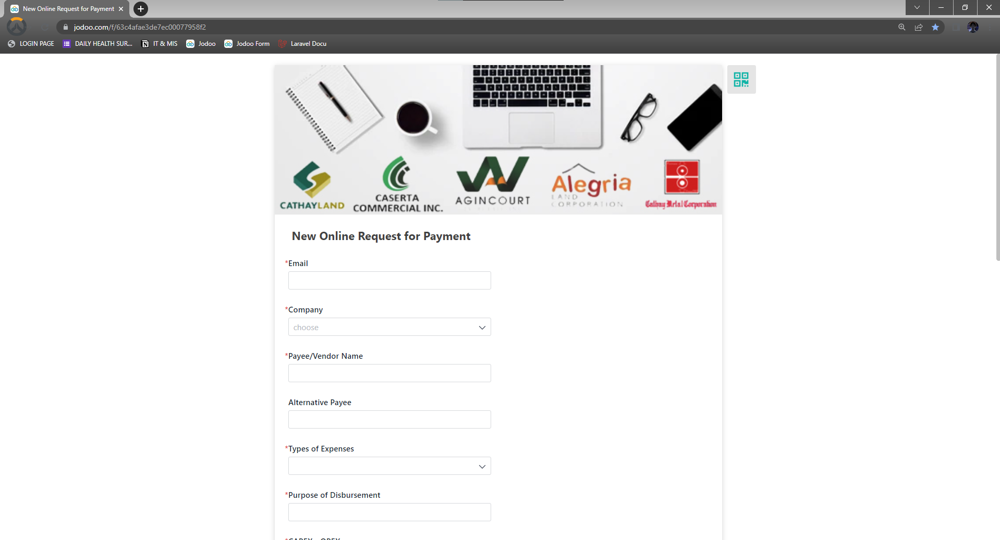
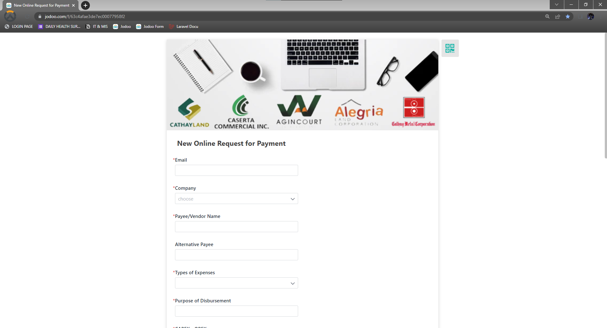
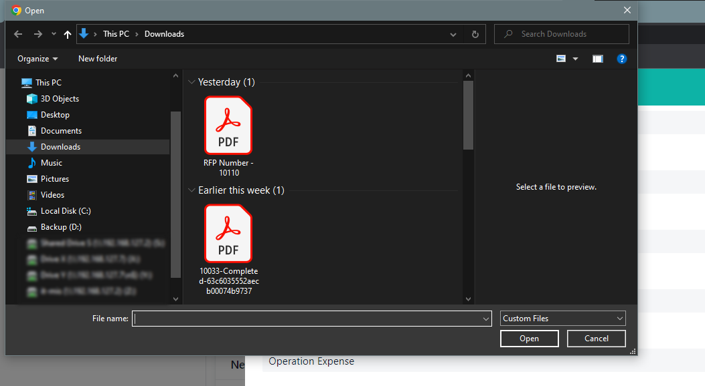
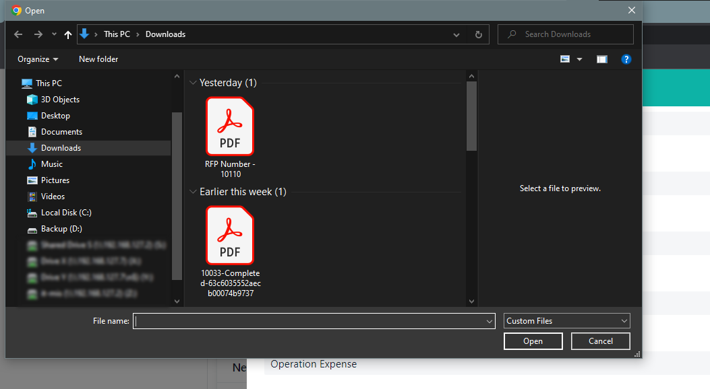
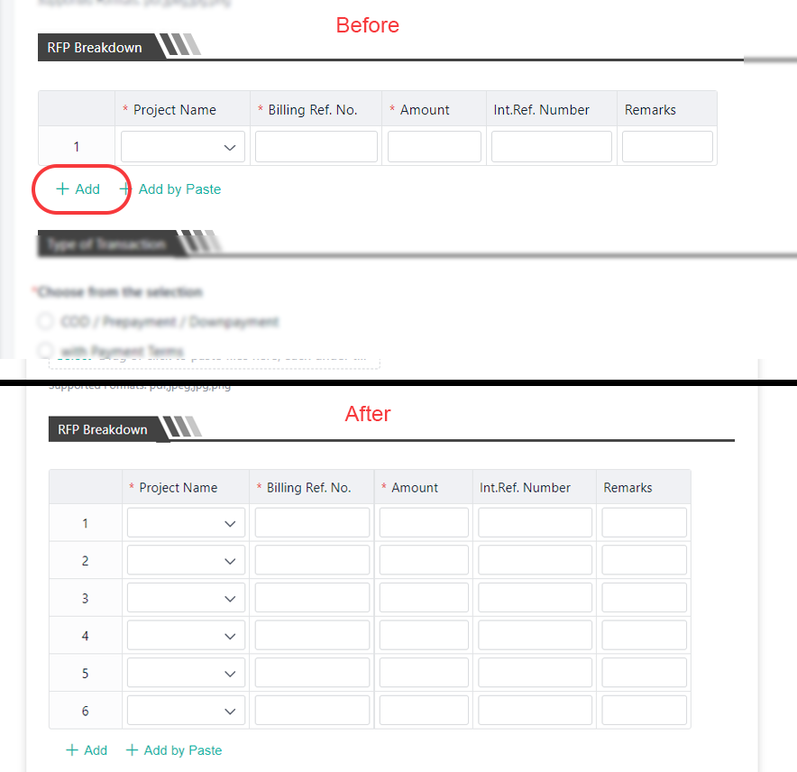
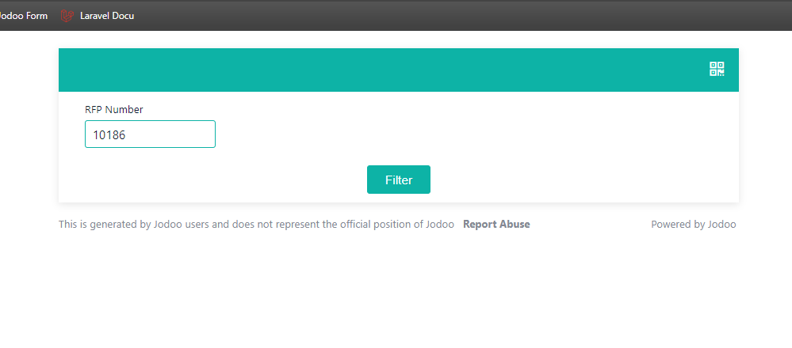
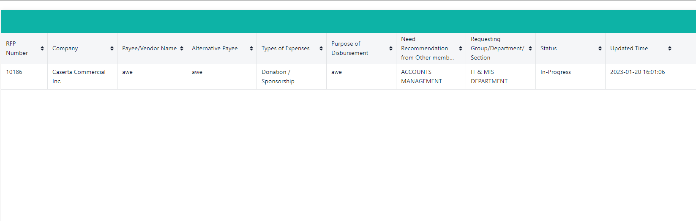
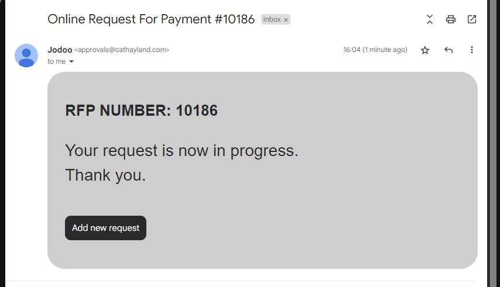
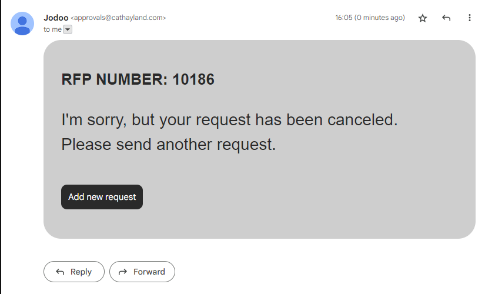
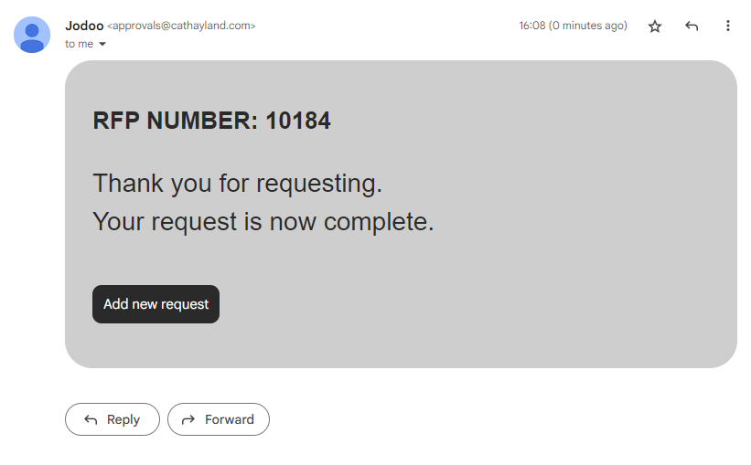

How to make a request
Jodoo Form link: (Wait for the announcement of the final link).
So here's what the request form looks like; you just need to fill up the given fields.
Jodoo Form link: (Wait for the announcement of the final link).
So here's what the request form looks like; you just need to fill up the given fields.
For attaching files, you just need to click the select button and choose the file you want to attach.
Note: Only pdf, jpeg, jpg and png files are allowed to attach.
 

For multiple RFPs, you just need to click "add" and then fill up the fields required.
After successfully submitting the form, you will see this message. You can save your RFP number to track the status of your request.
There are two way for tracking your request: the query method and email.
You'll just need to put the RFP number in the text box.
You can see the fields of your request as well as the status of your request here.
The second way to track your record is to receive an email notification of the status of your request.
Here is an example of the notification you will receive via email.
  